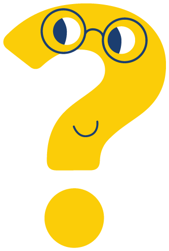

Questions fréquentes
Les réponses aux questions que les parents posent le plus souvent sur l’examen des yeux, les lunettes, l’œil paresseux et le strabisme.

L’examen des yeux
À quel âge mon enfant doit-il passer un premier examen des yeux ?
Un examen ophtalmologique peut être réalisé peu après la naissance si une raison le justifie. En l’absence de motif particulier, un examen vers l’âge de 2 à 3 ans est le plus informatif.
Pouvez-vous examiner les yeux de mon enfant avant qu’il sache lire ou parler ?
Oui. Votre enfant n’a pas besoin de savoir parler ni de reconnaître les lettres pour que ses yeux soient examinés. Nous utilisons des méthodes adaptées, comme observer comment il suit des objets ou des lumières, des cartes avec des images et des tests ludiques adaptés à son âge. Grâce aux gouttes, nous pouvons aussi mesurer objectivement si des lunettes sont nécessaires, sans que votre enfant doive répondre à quoi que ce soit.
Mon enfant a-t-il besoin d’un examen si le dépistage scolaire était normal ?
Le test visuel à l’école est un dépistage, pas un examen ophtalmologique complet. Vous avez des doutes, il y a des problèmes oculaires dans la famille ou votre enfant présente des plaintes ? Nous recommandons alors un examen complet chez l’ophtalmologue.
Pourquoi des gouttes sont-elles nécessaires et combien de temps agissent-elles ?
Les gouttes relâchent temporairement le muscle qui permet à l’œil de faire la mise au point (cycloplégie) et dilatent la pupille (mydriase).
- Lorsque les yeux sont complètement relâchés, nous pouvons mesurer leur correction de manière fiable. C’est uniquement sur la base de cette mesure que nous pouvons décider si des lunettes sont nécessaires.
- La pupille dilatée nous permet d’examiner l’intérieur de l’œil, comme la rétine et le nerf optique.
L’effet dure généralement de quelques heures jusqu’au lendemain. Pendant cette période, votre enfant peut voir flou de près et être sensible à la lumière vive. Des lunettes de soleil ou une casquette peuvent aider.
Les lunettes
Pourquoi mon enfant a-t-il besoin de lunettes s’il voit bien ?
Même si votre enfant semble bien voir, il peut exister un risque d’œil paresseux, voire de deux yeux paresseux. Pendant la période critique du développement de la vision, les lunettes sont un traitement, et pas seulement une aide pour mieux voir. Si l’ophtalmologue a prescrit des lunettes, il est important que votre enfant les porte régulièrement, même si vous ne remarquez rien d’anormal dans sa vision.
Mon enfant doit-il porter ses lunettes toute la journée ?
Dans le traitement d’un œil paresseux (amblyopie), votre enfant doit porter ses lunettes toute la journée, y compris pendant la récréation. Dans certains cas, et après en avoir discuté avec l’ophtalmologue, il peut suffire de les porter uniquement pour les activités où une bonne vision est importante, comme à l’école ou pendant les devoirs.
Les lunettes vont-elles affaiblir les yeux de mon enfant ou le rendre dépendant ?
Non. Les lunettes n’affaiblissent pas les yeux de votre enfant et ne le rendent pas dépendant. Certains parents remarquent que leur enfant semble moins bien voir sans lunettes qu’auparavant. C’est parce qu’il s’est habitué à voir net, et non parce que ses yeux se sont détériorés. Ne doutez pas de l’importance des lunettes : un port irrégulier peut compromettre le traitement.
Que faire si mon enfant refuse de porter ses lunettes ?
Quelques conseils qui peuvent aider :
- Augmentez progressivement le temps de port, par exemple pendant une activité qu’il aime.
- Encouragez votre enfant de manière positive et félicitez-le.
- Utilisez des modèles, comme des livres ou des personnages qui portent aussi des lunettes.
- Veillez à ce que la monture soit bien ajustée et confortable.
Si votre enfant continue à refuser ses lunettes, contactez-nous. Il y a parfois une raison, comme une monture mal ajustée ou une correction à adapter.
À quelle fréquence la correction des lunettes doit-elle être contrôlée ?
Les enfants de moins de 10 ans qui portent des lunettes doivent être suivis régulièrement par l’ophtalmologue. Celui-ci détermine la fréquence nécessaire : chaque année, tous les 6 mois ou plus souvent.
Œil paresseux et strabisme
Quelle est la différence entre un œil paresseux et un strabisme ?
L’œil paresseux (amblyopie) et le strabisme sont deux affections distinctes qui peuvent parfois apparaître ensemble. Un strabisme peut provoquer un œil paresseux, mais ce n’est pas toujours le cas. À l’inverse, un œil atteint d’une amblyopie sévère peut aussi développer un strabisme.
Mon enfant peut-il avoir un strabisme si ses yeux semblent droits ?
Oui. On parle alors de phorie : une forme de strabisme qui n’est pas toujours visible, mais qui peut tout de même provoquer des plaintes, comme de la fatigue visuelle ou des maux de tête.
Quels sont les traitements possibles du strabisme ?
Le traitement dépend du type de strabisme. Les options possibles sont les lunettes, l’occlusion d’un œil (cache-œil), des exercices oculaires et une opération. Votre ophtalmologue discutera avec vous, lors de la consultation, du traitement le mieux adapté à votre enfant.

Vous souhaitez prendre rendez-vous ?
Choisissez la clinique qui vous convient le mieux et réservez directement en ligne. Une question ? N’hésitez pas à appeler le cabinet.
Prendre rendez-vous